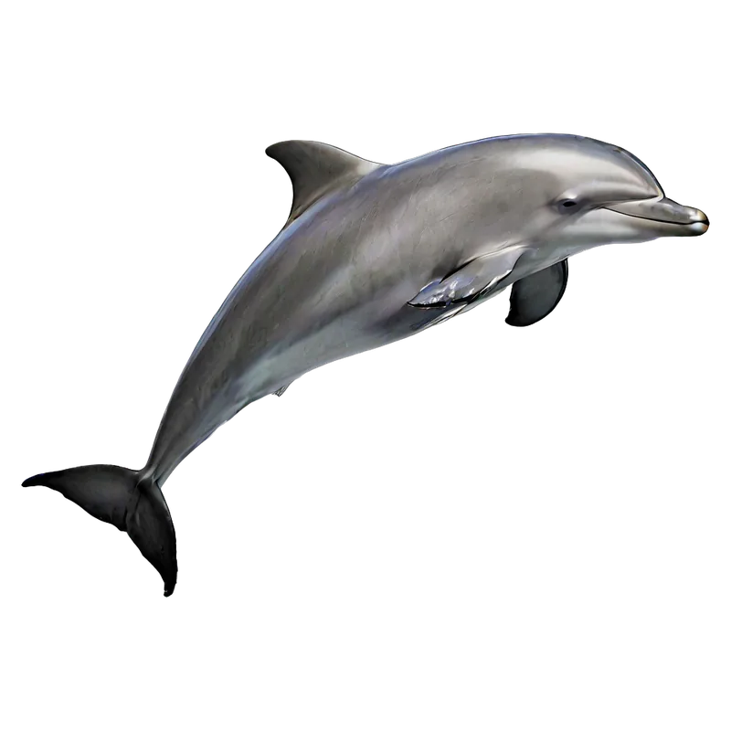
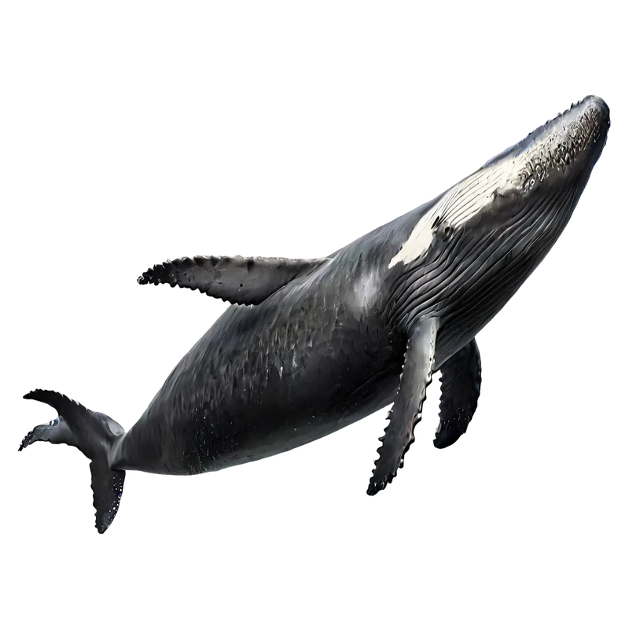
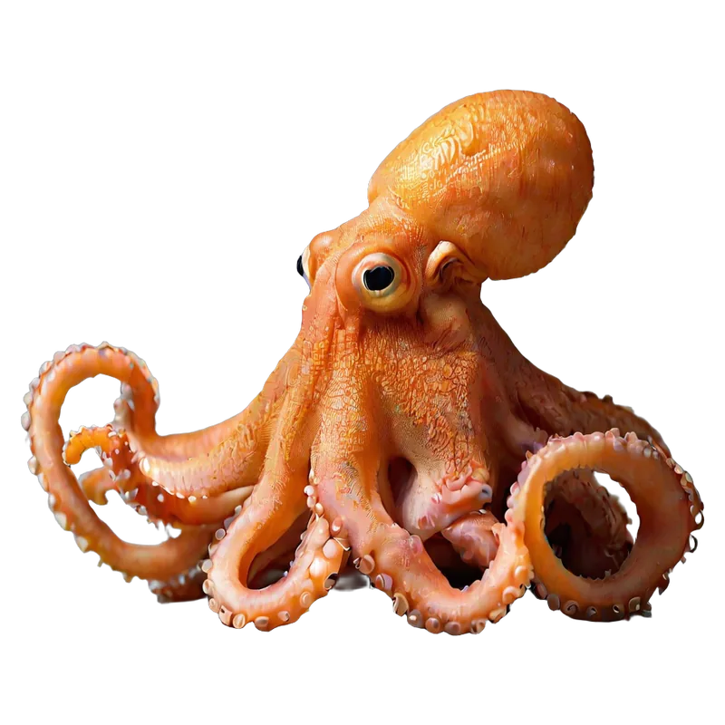
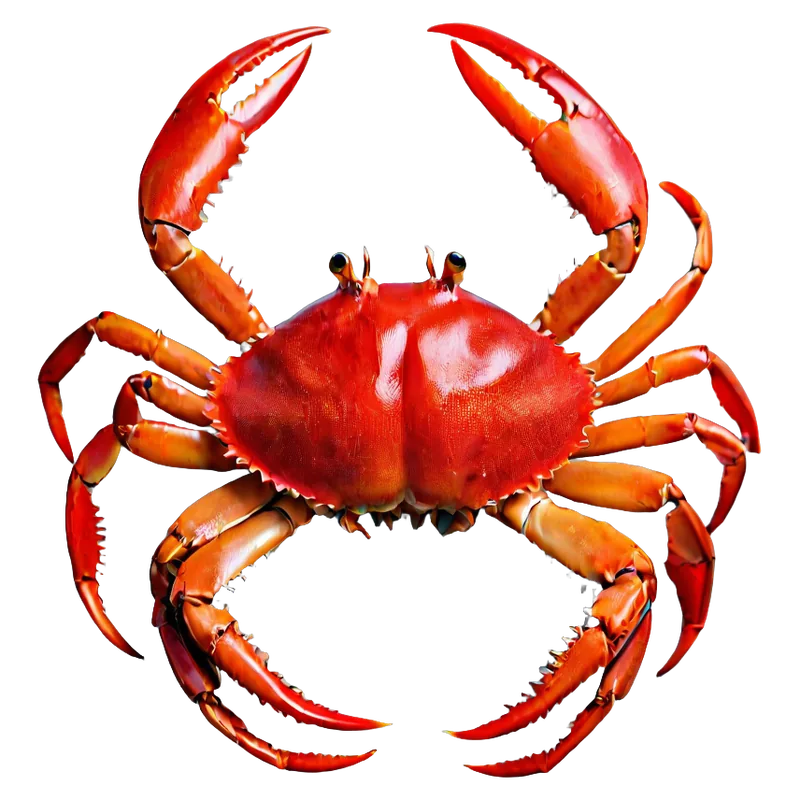
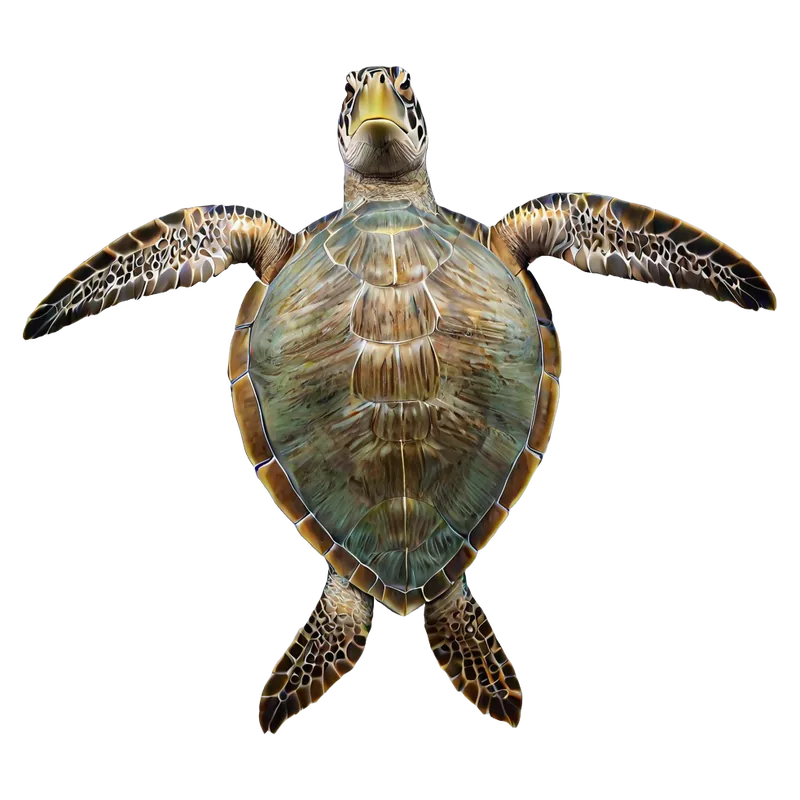
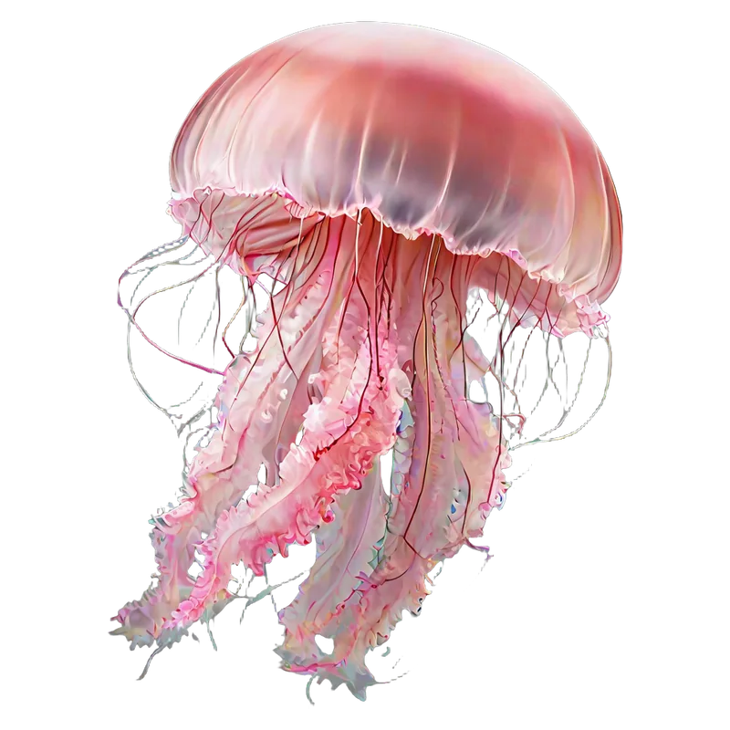
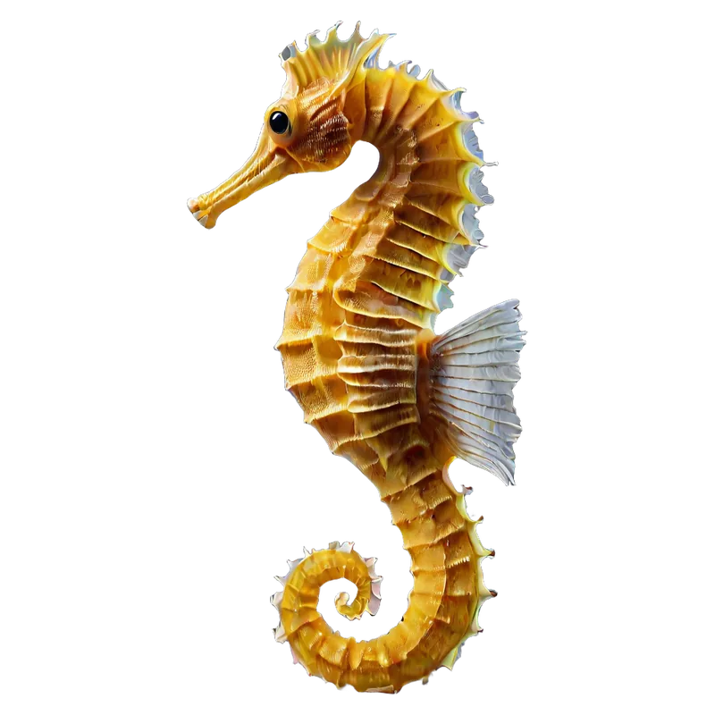
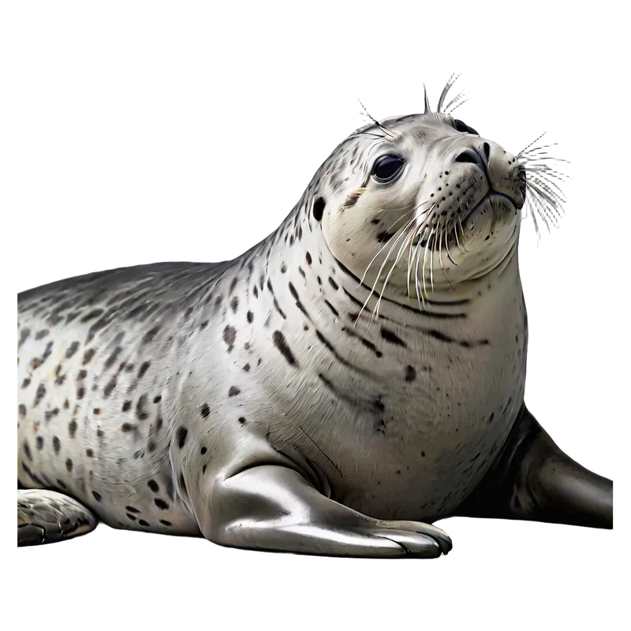
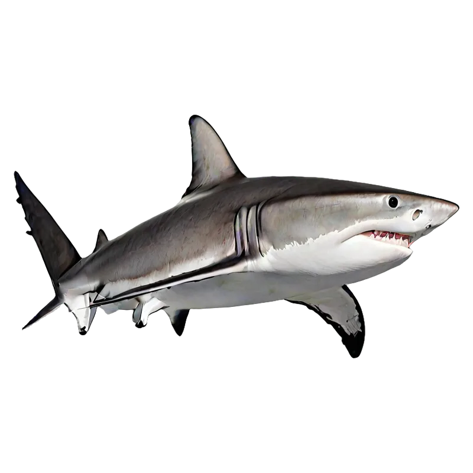
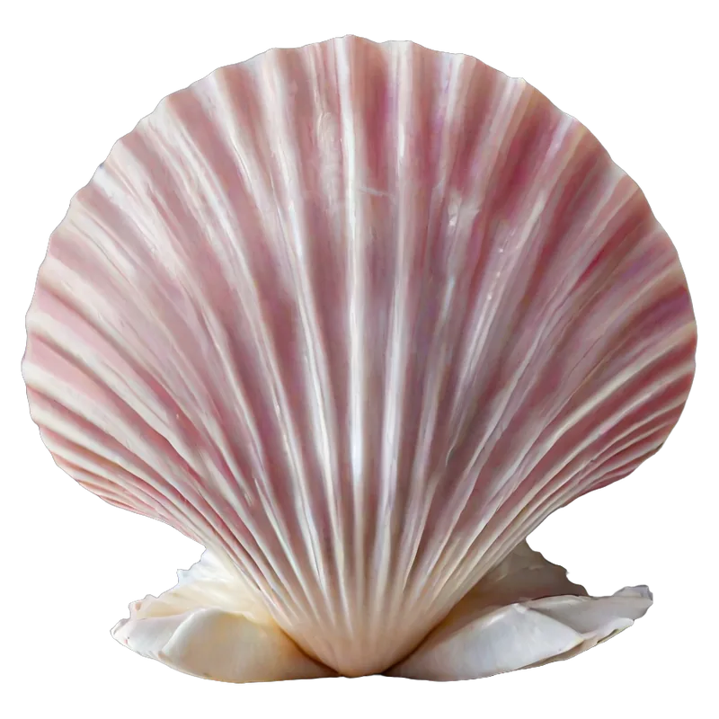

كِتَابِي الْأَوَّل
حَيَوَانَاتُ
الْبَحْر
الْبَحْر
صِغَارُ الضَّاد
11-sea-animals · page 1 · front cover
سَمَكَة
11-sea-animals · page 2 · item 01
دُلْفِين

11-sea-animals · page 3 · item 02
حُوت

11-sea-animals · page 4 · item 03
أُخْطُبُوط

11-sea-animals · page 5 · item 04
سَرَطَان

11-sea-animals · page 6 · item 05
سُلَحْفَاة بَحْرِيَّة

11-sea-animals · page 7 · item 06
نَجْمُ الْبَحْر

11-sea-animals · page 8 · item 07
قِنْدِيلُ الْبَحْر

11-sea-animals · page 9 · item 08
حِصَانُ الْبَحْر

11-sea-animals · page 10 · item 09
فُقْمَة

11-sea-animals · page 11 · item 10
قِرْش

11-sea-animals · page 12 · item 11
مَحَارَة

11-sea-animals · page 13 · item 12
أَيْنَ الْأُخْطُبُوطُ؟
11-sea-animals · page 14 · question 1
أَيْنَ الْحُوتُ؟
11-sea-animals · page 15 · question 2
أَيْنَ الدُّلْفِينُ؟
11-sea-animals · page 16 · question 3
أَيْنَ الْقِرْشُ؟
11-sea-animals · page 17 · question 4
أَيْنَ الْمَحَارَةُ؟
11-sea-animals · page 18 · question 5
كُلُّهَا مَعًا!
دُلْفِين
حُوت
أُخْطُبُوط
سَرَطَان
سُلَحْفَاة بَحْرِيَّة
قِنْدِيلُ الْبَحْر
حِصَانُ الْبَحْر
فُقْمَة
قِرْش
مَحَارَة
11-sea-animals · page 19 · all together
صِغَارُ الضَّاد
يتعرّف طفلك على اثني عشر حيوانًا من حيوانات البحر بصور حقيقية واضحة.
من عمر سنة إلى ٣ سنوات
ISBN / BARCODEprinter places it here
11-sea-animals · page 20 · back cover